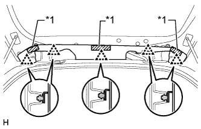
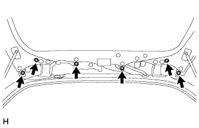
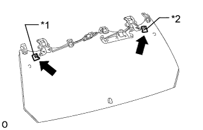

СТЕКЛО ДВЕРИ БАГАЖНОГО ОТДЕЛЕНИЯ (для моделей с механизмом открывания заднего стекла) > СНЯТИЕ |
| 1. СНИМИТЕ ПАНЕЛЬ ЗАДНЕГО СПОЙЛЕРА № 1 |
|  |
Отсоедините крепежную ленту и 5 фиксаторов и снимите задний спойлер № 1.
| *1 | Крепежная лента |
| 2. СНИМИТЕ ПРАВУЮ ПАНЕЛЬ ЗАДНЕГО СПОЙЛЕРА |
Отсоедините крепежную ленту и 5 фиксаторов и снимите задний спойлер № 1.
| *1 | Крепежная лента |
| 3. СНИМИТЕ ЗАДНИЙ СПОЙЛЕР В СБОРЕ |
 |
Отсоедините разъем.
|  |
Выверните 6 болтов.
 |
Освободите 3 фиксатора и снимите задний спойлер.
| 4. СНИМИТЕ РЫЧАГ ЗАДНЕГО СТЕКЛООЧИСТИТЕЛЯ |
 |
Отверните гайку и снимите рычаг заднего стеклоочистителя.
| 5. СНИМИТЕ ДВИГАТЕЛЬ ЗАДНЕГО СТЕКЛООЧИСТИТЕЛЯ В СБОРЕ |
Отсоедините шланг стеклоомывателя и разъем электродвигателя стеклоочистителя.
| *A | для моделей с кронштейном запасного колеса на двери багажного отделения |
| *B | для моделей без кронштейна запасного колеса на двери багажного отделения |
Выверните 3 болта.
| *A | для моделей с кронштейном запасного колеса на двери багажного отделения |
| *B | для моделей без кронштейна запасного колеса на двери багажного отделения |
Отсоедините 2 направляющих и снимите электродвигатель заднего стеклоочистителя.
| 6. СНИМИТЕ ЛЕВУЮ СТОЙКУ ЗАДНЕГО ОКНА В СБОРЕ |
 |
С помощью отвертки снимите 2 стопорных кольца, как показано на рисунке, и снимите стойку заднего стекла.
| *1 | Защитная клейкая лента |
| 7. СНИМИТЕ ПРАВУЮ СТОЙКУ ЗАДНЕГО ОКНА В СБОРЕ |
| 8. СНИМИТЕ СТЕКЛО ДВЕРИ БАГАЖНОГО ОТДЕЛЕНИЯ |
 |
Снимите разъем и освободите 2 зажима.
 |
Выверните 4 болта и снимите стекло окна двери багажного отделения.
| 9. СНИМИТЕ КРЫШКУ ЗАЩЕЛКИ ЗАМКА ДВЕРИ БАГАЖНОГО ОТДЕЛЕНИЯ |
С помощью съемника молдингов расцепите 3 захвата и снимите крышку защелки замка.
| 10. СНИМИТЕ ЗАЩЕЛКУ ЗАМКА ОКНА ДВЕРИ БАГАЖНОГО ОТДЕЛЕНИЯ В СБОРЕ |
Отверните 2 гайки и снимите защелку замка.
| 11. СНИМИТЕ РАСПОРНУЮ ДЕТАЛЬ СТЕКЛА ДВЕРИ БАГАЖНОГО ОТДЕЛЕНИЯ |
|  |
Снимите распорную деталь стекла двери багажного отделения.
| *1 | Распорная деталь стекла двери багажного отделения № 2 |
| *2 | Распорная деталь стекла двери багажного отделения № 1 |
| 12. СНИМИТЕ ЛЕВУЮ ПЕТЛЮ ДВЕРИ БАГАЖНОГО ОТДЕЛЕНИЯ В СБОРЕ |
 |
С помощью торцевого ключа "TORX" (T30) выверните 2 винта и снимите петлю двери багажного отделения.
| 13. СНИМИТЕ ПРАВУЮ ПЕТЛЮ ДВЕРИ БАГАЖНОГО ОТДЕЛЕНИЯ В СБОРЕ |